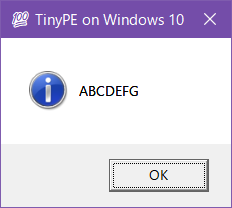
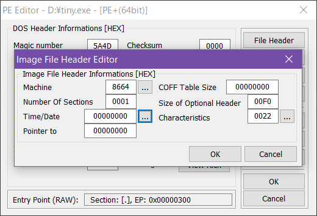
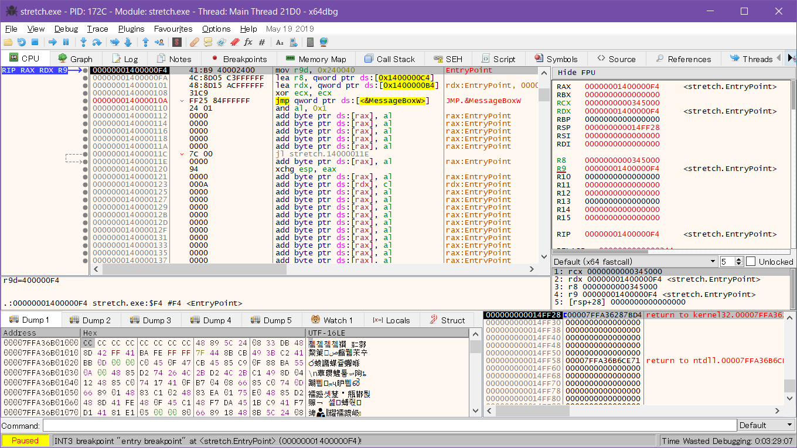

GitHub 链接：ayaka14732/TinyPE-on-Win10
本次实验尝试制作了 Windows 10 操作系统下的最小 64 位 PE 文件，该文件可以弹出带有文字提示的消息框，且满足实验的三项限制条件：
经过九个步骤后，最终制作出了 268 字节的 PE 文件。
实验步骤如下：
| 步骤 | 文件大小（字节） | 熵 |
|---|---|---|
| 1 | 94208 | 5.924863 |
| 2 | 896 | 3.567715 |
| 3 | 896 | 2.220567 |
| 4 | 896 | 1.608427 |
| 5 | 896 | 1.607880 |
| 6 | 448 | 2.653766 |
| 7 | 308 | 2.473451 |
| 8 | 280 | 2.620173 |
| 9 | 268 | 2.667864 |
其中，第 3-5 步虽然文件大小没有减小，但文件的熵减小了，这说明文件内部有更多的零，也就说明后续步骤有更多的压缩空间。
第一步：使用常规方法，利用 C 语言编写程序，使用 MSVC 编译器生成普通的 PE 文件。
在 Windows 编程中，要弹出消息框，可以使用 MessageBoxA 或 MessageBoxW 这两个函数。其中，函数名以 A 结尾表示字符编码使用用户的当前代码页，以 W 结尾表示使用 UTF-16。
由于用户使用的代码页并不统一，出于兼容性的考虑，本次实验使用以 W 结尾的 MessageBoxW 函数。代码页的问题其实非常常见，相信许多人在 Windows 上使用 Python 编程时，都遇到过因为代码页不对而导致程序乱码或崩溃的问题。这里使用 MessageBoxW 函数，与代码页无关，所以可以避免程序乱码或崩溃。
编写的 C 语言代码 tiny.c 如下：
#include <Windows.h>
int main() {
MessageBoxW( NULL /* hWnd */,
L"ABCDEFG" /* lpText, 16 bytes */,
L"💯 TinyPE on Windows 10" /* lpCaption, 48 bytes */,
MB_ICONASTERISK | MB_TOPMOST | MB_SERVICE_NOTIFICATION /* uType */ );
return 0;
}接下来将 C 语言代码编译为 PE 文件。
安装 Visual Studio Build Tools 2019 后，「开始」菜单中会出现 Visual Studio 2019 文件夹。点击其中的 x64 Native Tools Command Prompt for VS 2019 打开命令行，切换到当前目录后，输入以下命令：
> cl /O1 /source-charset:utf-8 tiny.c /link /SUBSYSTEM:WINDOWS /ENTRY:mainCRTStartup user32.lib
Microsoft (R) C/C++ Optimizing Compiler Version 19.22.27905 for x64
Copyright (C) Microsoft Corporation. All rights reserved.
tiny.c
Microsoft (R) Incremental Linker Version 14.22.27905.0
Copyright (C) Microsoft Corporation. All rights reserved.
/out:tiny.exe
/SUBSYSTEM:WINDOWS
/ENTRY:mainCRTStartup
user32.lib
tiny.obj编译生成 tiny.exe 文件，可以正常运行：

第二步：通过改变 MSVC 编译器编译时的选项，减小生成的 PE 文件大小。
参考 Minimize the size of your program – high level 和 Linker Options 可知，通过修改 C 语言代码和编译选项，可以减小编译生成的 PE 文件大小。
修改后的 C 语言代码 tiny.c 如下：
#include <Windows.h>
void _() {
MessageBoxW( NULL /* hWnd */,
L"ABCDEFG" /* lpText, 16 bytes */,
L"💯 TinyPE on Windows 10" /* lpCaption, 48 bytes */,
MB_ICONASTERISK | MB_TOPMOST | MB_SERVICE_NOTIFICATION /* uType */ );
}使用以下命令行选项编译：
> cl /O1 /MD /GS- /source-charset:utf-8 tiny.c /link /NOLOGO /NODEFAULTLIB /SUBSYSTEM:WINDOWS /ENTRY:_ /MERGE:.rdata=. /MERGE:.pdata=. /MERGE:.text=. /SECTION:.,ER /ALIGN:16 user32.lib
Microsoft (R) C/C++ Optimizing Compiler Version 19.22.27905 for x64
Copyright (C) Microsoft Corporation. All rights reserved.
tiny.c
LINK : warning LNK4108: /ALIGN specified without /DRIVER; image may not run
LINK : warning LNK4254: section '.text' (60000020) merged into '.' (40000040) with different attributes编译生成 tiny.exe 文件，可以正常运行。
第三步：使用 PE Tools 查看上一步产生的 PE 文件的内部结构，将其中一些明显无用的部分置零。此时文件大小并没有减小，但文件内部有了更多的零，这让后续步骤有了更多的压缩空间。
打开 PE Tools (v1.9.762.2018)，单击“PE Editor”，然后打开 tiny.exe。

找到以下三个部分，并置零：
修改后的 tiny.exe 文件可以正常运行。
第四步：在 PE 文件的内部结构中，MS-DOS stub 也是无用的部分，所以使用二进制编辑器手动将这部分内容置零。这一步也给了后续步骤更多的压缩空间。
使用二进制编辑器打开 tiny.exe。
定位到以下部分，并置零：
0x02-0x3b 置零0x40-0x7f 置零这里需要注意，0x00-0x01 是 e_magic，0x3c-0x3f 是 e_lfanew，它们都是有用的字段，所以没有置零。
修改后的 tiny.exe 文件可以正常运行，内容如下：
$ xxd -p tiny.exe
4d5a00000000000000000000000000000000000000000000000000000000
000000000000000000000000000000000000000000000000000000000000
c00000000000000000000000000000000000000000000000000000000000
000000000000000000000000000000000000000000000000000000000000
000000000000000000000000000000000000000000000000000000000000
000000000000000000000000000000000000000000000000000000000000
000000000000000000000000504500006486010000000000000000000000
0000f00022000b020e1690010000000000000000000000030000f0010000
000000400100000010000000100000000600000000000000060000000000
000080030000f00100000000000002006081000010000000000000100000
000000000000100000000000001000000000000000000000100000000000
000000000000200300002800000000000000000000000000000000000000
000000000000000000000000000000000000000000000000000000000000
000000000000000000000000000000000000000000000000000000000000
00000000f001000010000000000000000000000000000000000000000000
0000000000002e0000000000000082010000f001000090010000f0010000
000000000000000000000000200000605803000000000000000000000000
00003dd8afdc2000540069006e0079005000450020006f006e0020005700
69006e0064006f0077007300200031003000000041004200430044004500
460047000000000000000000000000000000000000000000000000000000
000000000000000000000000000000000000000000000000000000000000
000000000000000000000000000000000000000000000000000000000000
000000000000000000000000000000000000000000000000000000000000
000000000000000000000000000000000000000000000000000000000000
000000000000000000000000000000000000000000000000000000000000
00000000000000000000000000000000000041b9400024004c8d05f3feff
ff488d151cffffff33c948ff25d3feffffcccccc48030000000000000000
000066030000f00100000000000000000000000000000000000000000000
5803000000000000000000000000000094024d657373616765426f785700
5553455233322e646c6c00000000000000000000000000000000可以使用 xxd -p -r 将以上文本转换回二进制文件。
第五步：详细分析 PE 文件的内部结构，理解 PE 文件中各部分的含义，然后使用汇编语言手动编写一个相同的 PE 文件。虽然这一步生成的文件和上一步相比没有区别，但使用汇编语言后，后续步骤就无需修改二进制文件本身，而可以在汇编代码上作修改，从而更简便地减小文件大小。
在理解 PE 文件的结构时，主要参考了以下资料：
另外，还使用了 PE Tools 和 PE Disassembler viewer 这两个工具。
在理解 PE 文件的结构后，使用汇编语言手动编写一个相同的 PE 文件。
在编写汇编语言时，要特别注意不能使用硬编码的数值，而是要使用伪指令计算得出相应的数值。例如，文件大小的数值 0x0380 使用 file_size equ $-$$ 替换，机器指令 0x41b940002400 使用 mov r9d, 0x00240040 替换。这是因为如果使用了硬编码的数值，后续步骤中 PE 文件的结构发生变化时，这些数值并不会随之改变，文件就会损坏。
此外，在使用 NASM 汇编器时，根据官方文档，分别使用伪指令 db、dw、dd、dq 声明 1、2、4、8 字节的数据。
编写的汇编语言文件 stretch.asm 如下：
BITS 64
%define align(n,r) (((n+(r-1))/r)*r)
; DOS Header
dw 'MZ' ; e_magic
dw 0 ; [UNUSED] e_cblp
dw 0 ; [UNUSED] c_cp
dw 0 ; [UNUSED] e_crlc
dw 0 ; [UNUSED] e_cparhdr
dw 0 ; [UNUSED] e_minalloc
dw 0 ; [UNUSED] e_maxalloc
dw 0 ; [UNUSED] e_ss
dw 0 ; [UNUSED] e_sp
dw 0 ; [UNUSED] e_csum
dw 0 ; [UNUSED] e_ip
dw 0 ; [UNUSED] e_cs
dw 0 ; [UNUSED] e_lfarlc
dw 0 ; [UNUSED] e_ovno
times 4 dw 0 ; [UNUSED] e_res
dw 0 ; [UNUSED] e_oemid
dw 0 ; [UNUSED] e_oeminfo
times 10 dw 0 ; [UNUSED] e_res2
dd pe_hdr ; e_lfanew
; DOS Stub
times 8 dq 0 ; [UNUSED] DOS Stub
; Rich Header
times 8 dq 0 ; [UNUSED] Rich Header
; PE Header
pe_hdr:
dw 'PE', 0 ; Signature
; Image File Header
dw 0x8664 ; Machine
dw 0x01 ; NumberOfSections
dd 0 ; [UNUSED] TimeDateStamp
dd 0 ; PointerToSymbolTable
dd 0 ; NumberOfSymbols
dw opt_hdr_size ; SizeOfOptionalHeader
dw 0x22 ; Characteristics
; Optional Header, COFF Standard Fields
opt_hdr:
dw 0x020b ; Magic (PE32+)
db 0x0e ; MajorLinkerVersion
db 0x16 ; MinorLinkerVersion
dd code_size ; SizeOfCode
dd 0 ; SizeOfInitializedData
dd 0 ; SizeOfUninitializedData
dd entry ; AddressOfEntryPoint
dd iatbl ; BaseOfCode
; Optional Header, NT Additional Fields
dq 0x000140000000 ; ImageBase
dd 0x10 ; SectionAlignment
dd 0x10 ; FileAlignment
dw 0x06 ; MajorOperatingSystemVersion
dw 0 ; MinorOperatingSystemVersion
dw 0 ; MajorImageVersion
dw 0 ; MinorImageVersion
dw 0x06 ; MajorSubsystemVersion
dw 0 ; MinorSubsystemVersion
dd 0 ; Reserved1
dd file_size ; SizeOfImage
dd hdr_size ; SizeOfHeaders
dd 0 ; CheckSum
dw 0x02 ; Subsystem (Windows GUI)
dw 0x8160 ; DllCharacteristics
dq 0x100000 ; SizeOfStackReserve
dq 0x1000 ; SizeOfStackCommit
dq 0x100000 ; SizeOfHeapReserve
dq 0x1000 ; SizeOfHeapCommit
dd 0 ; LoaderFlags
dd 0x10 ; NumberOfRvaAndSizes
; Optional Header, Data Directories
dd 0 ; Export, RVA
dd 0 ; Export, Size
dd itbl ; Import, RVA
dd itbl_size ; Import, Size
dd 0 ; Resource, RVA
dd 0 ; Resource, Size
dd 0 ; Exception, RVA
dd 0 ; Exception, Size
dd 0 ; Certificate, RVA
dd 0 ; Certificate, Size
dd 0 ; Base Relocation, RVA
dd 0 ; Base Relocation, Size
dd 0 ; Debug, RVA
dd 0 ; Debug, Size
dd 0 ; Architecture, RVA
dd 0 ; Architecture, Size
dd 0 ; Global Ptr, RVA
dd 0 ; Global Ptr, Size
dd 0 ; TLS, RVA
dd 0 ; TLS, Size
dd 0 ; Load Config, RVA
dd 0 ; Load Config, Size
dd 0 ; Bound Import, RVA
dd 0 ; Bound Import, Size
dd iatbl ; IAT, RVA
dd iatbl_size ; IAT, Size
dd 0 ; Delay Import Descriptor, RVA
dd 0 ; Delay Import Descriptor, Size
dd 0 ; CLR Runtime Header, RVA
dd 0 ; CLR Runtime Header, Size
dd 0 ; Reserved, RVA
dd 0 ; Reserved, Size
opt_hdr_size equ $-opt_hdr
; Section Table
section_name db '.' ; Name
times 8-($-section_name) db 0
dd sect_size ; VirtualSize
dd iatbl ; VirtualAddress
dd code_size ; SizeOfRawData
dd iatbl ; PointerToRawData
dd 0 ; PointerToRelocations
dd 0 ; PointerToLinenumbers
dw 0 ; NumberOfRelocations
dw 0 ; NumberOfLinenumbers
dd 0x60000020 ; Characteristics
hdr_size equ $-$$
code:
; Import Address Directory
iatbl:
dq symbol
dq 0
iatbl_size equ $-iatbl
; Strings
title:
db 0x3d,0xd8,0xaf,0xdc,0x20,0x00,0x54,0x00
db 0x69,0x00,0x6e,0x00,0x79,0x00,0x50,0x00
db 0x45,0x00,0x20,0x00,0x6f,0x00,0x6e,0x00
db 0x20,0x00,0x57,0x00,0x69,0x00,0x6e,0x00
db 0x64,0x00,0x6f,0x00,0x77,0x00,0x73,0x00
db 0x20,0x00,0x31,0x00,0x30,0x00,0,0
content:
db 0x41,0x00,0x42,0x00,0x43,0x00,0x44,0x00
db 0x45,0x00,0x46,0x00,0x47,0x00,0,0
; Debug Table
times 24 dq 0 ; [UNUSED] Debug Table
; Entry
entry:
mov r9d, 0x00240040 ; uType
lea r8, [rel title] ; lpCaption
lea rdx, [rel content] ; lpText
xor ecx, ecx ; hWnd
jmp [rel iatbl] ; MessageBoxW
times align($-$$,16)-($-$$) db 0xcc
; Import Directory
itbl:
dq intbl ; OriginalFirstThunk
dd 0 ; TimeDateStamp
dd dll_name ; ForwarderChain
dd iatbl ; Name
dq 0 ; FirstThunk
times 3 dd 0
itbl_size equ $-itbl
; Import Name Table
intbl:
dq symbol
dq 0
; Symbol
symbol:
dw 0x0294 ; [UNUSED] Function Order
db 'MessageBoxW', 0 ; Function Name
dll_name:
db 'USER32.dll', 0
db 0
sect_size equ $-code
times align($-$$,16)-($-$$) db 0
code_size equ $-code
file_size equ $-$$编译：
$ nasm -f bin -o stretch.exe -l stretch.lst stretch.asm编译生成 stretch.exe，可以正常运行。
这时发现，虽然 stretch.exe 是参照 tiny.exe 手动编写的，理论上应该完全相同，但是实际上两者略有区别：
$ diff =(xxd step4/tiny.exe) =(xxd step5/stretch.exe)
50c50
< 00000310: 1cff ffff 33c9 48ff 25d3 feff ffcc cccc ....3.H.%.......
---
> 00000310: 1cff ffff 31c9 ff25 d4fe ffff cccc cccc ....1..%........xor ecx, ecx 指令在 tiny.exe 中以机器码 0x33c9 表示，而在 stretch.exe 中以 0x31c9 表示。由 XOR — Logical Exclusive OR 可知，这是由于指令编码方式不同，不影响指令的效果：
$ echo 33c9 | xxd -p -r - | ndisasm -b 64 -
00000000 33C9 xor ecx,ecx
$ echo 31c9 | xxd -p -r - | ndisasm -b 64 -
00000000 31C9 xor ecx,ecxjmp [rel iatbl] 指令在 tiny.exe 中以机器码 0x48ff25d3feffff 表示，而在 stretch.exe 中以 0xff25d4feffff 表示。这两条指令的跳转地址没有区别：
$ echo 48ff25d3feffff | xxd -p -r - | ndisasm -b 64 -
00000000 48FF25D3FEFFFF jmp qword [rel 0xfffffffffffffeda]
$ echo ff25d4feffff | xxd -p -r - | ndisasm -b 64 -
00000000 FF25D4FEFFFF jmp [rel 0xfffffffffffffeda]由 Stack Overflow 上的一个回答可知，机器码中的 48 前缀表示 REX.W，会被处理器忽略。这一前缀可能与 Windows x64 的 unwind data 有关。不论如何，从运行结果上看，这一修改不影响指令的效果。
由此可知，这一步使用汇编语言编写的 stretch.exe 和上一步的 tiny.exe 是等价的。
第六步：根据对 PE 文件内部结构的分析，从汇编代码上删除所有可以直接删除的无用部分，从而减小文件大小。
删除的部分如下：
NumberOfRvaAndSizes 设置为 2itbl 后用于对齐的字节修改后的 stretch.asm 如下：
$ diff step5/stretch.asm step6/stretch.asm
26,31d25
< ; DOS Stub
< times 8 dq 0 ; [UNUSED] DOS Stub
<
< ; Rich Header
< times 8 dq 0 ; [UNUSED] Rich Header
<
77c71
< dd 0x10 ; NumberOfRvaAndSizes
---
> dd 0x02 ; NumberOfRvaAndSizes
84,111d77
< dd 0 ; Resource, RVA
< dd 0 ; Resource, Size
< dd 0 ; Exception, RVA
< dd 0 ; Exception, Size
< dd 0 ; Certificate, RVA
< dd 0 ; Certificate, Size
< dd 0 ; Base Relocation, RVA
< dd 0 ; Base Relocation, Size
< dd 0 ; Debug, RVA
< dd 0 ; Debug, Size
< dd 0 ; Architecture, RVA
< dd 0 ; Architecture, Size
< dd 0 ; Global Ptr, RVA
< dd 0 ; Global Ptr, Size
< dd 0 ; TLS, RVA
< dd 0 ; TLS, Size
< dd 0 ; Load Config, RVA
< dd 0 ; Load Config, Size
< dd 0 ; Bound Import, RVA
< dd 0 ; Bound Import, Size
< dd iatbl ; IAT, RVA
< dd iatbl_size ; IAT, Size
< dd 0 ; Delay Import Descriptor, RVA
< dd 0 ; Delay Import Descriptor, Size
< dd 0 ; CLR Runtime Header, RVA
< dd 0 ; CLR Runtime Header, Size
< dd 0 ; Reserved, RVA
< dd 0 ; Reserved, Size
150,152d115
< ; Debug Table
< times 24 dq 0 ; [UNUSED] Debug Table
<
170,171d132
<
< times 3 dd 0编译：
$ nasm -f bin -o stretch.exe -l stretch.lst stretch.asm编译生成 stretch.exe，可以正常运行。
第七步：虽然在上一步中删除了所有可以直接删除的无用部分，但还有一些无用字段不可以被直接删除。这是因为 PE 文件含有多个文件头，这些无用字段位于文件头中，而文件头的格式是固定的，也就是说即使文件头中的某个字段没有被使用，它也要在文件头中占据相应的位置，所以不能直接删除。为此，可以采取重叠的方法，通过精心选取合适的重叠方式，将多个文件头重叠在一起，并保证重叠之后，每个重叠的位置最多只能对应一个有用字段。这样就可以在不破坏文件头的前提下，有效地减小文件大小。
要判断一个字段是否是有用字段，可以采用修改的方法，比如将字段的值修改为 0。如果修改以后程序出现问题，则说明该字段是有用字段，否则是无用字段。
判断出有用字段和无用字段后，可以将有用字段与无用字段相互重叠，从而减小文件大小。例如，将 PE header 的起始位置设置为 DOS header 的 0x04 处，可以将两个文件头的字段重叠。重叠时可能存在多种不同的重叠方法，本次实验只选择其中一种方法。
另外，虽然 Import table 和 DLLFuncEntry 都是有用字段，但是两者可以重叠。这是因为 Import table 只在程序加载前使用，DLLFuncEntry 只在程序加载后使用，所以并不会产生冲突。
重叠后的 stretch.asm 如下：
BITS 64
; DOS Header
dw 'MZ' ; e_magic
dw 0 ; [UNUSED] e_cblp
pe_hdr: ; PE Header
dw 'PE' ; [UNUSED] c_cp ; Signature
dw 0 ; [UNUSED] e_crlc ; Signature (Cont)
; Image File Header
dw 0x8664 ; [UNUSED] e_cparhdr ; Machine
code:
symbol: ; Symbol
dw 0x01 ; [UNUSED] e_minalloc ; NumberOfSections ; [UNUSED] Function Order
db 'MessageBoxW', 0 ; Function Name
times 14-($-symbol) db 0; [UNUSED] e_maxalloc ; [UNUSED] TimeDateStamp
; [UNUSED] e_ss ; [UNUSED] TimeDateStamp (Cont)
; [UNUSED] e_sp ; [UNUSED] PointerToSymbolTable
; [UNUSED] e_csum ; [UNUSED] PointerToSymbolTable (Cont)
; [UNUSED] e_ip ; [UNUSED] NumberOfSymbols
; [UNUSED] e_cs ; [UNUSED] NumberOfSymbols (Cont)
dw opt_hdr_size ; [UNUSED] e_lfarlc ; SizeOfOptionalHeader
dw 0x22 ; [UNUSED] e_ovno ; Characteristics
opt_hdr: ; Optional Header, COFF Standard Fields
dw 0x020b ; [UNUSED] e_res ; Magic (PE32+)
db 0 ; [UNUSED] e_res (Cont) ; [UNUSED] MajorLinkerVersion
db 0 ; [UNUSED] e_res (Cont) ; [UNUSED] MinorLinkerVersion
dd code_size ; [UNUSED] e_res (Cont) ; SizeOfCode
dw 0 ; [UNUSED] e_oemid ; [UNUSED] SizeOfInitializedData
dw 0 ; [UNUSED] e_oeminfo ; [UNUSED] SizeOfInitializedData (Cont)
dd 0 ; [UNUSED] e_res2 ; [UNUSED] SizeOfUninitializedData
dd entry ; [UNUSED] e_res2 (Cont) ; AddressOfEntryPoint
dd code ; [UNUSED] e_res2 (Cont) ; BaseOfCode
; Optional Header, NT Additional Fields
dq 0x000140000000 ; [UNUSED] e_res2 (Cont) ; ImageBase
dd pe_hdr ; e_lfanew ; [MODIFIED] SectionAlignment (0x10 -> 0x04)
dd 0x04 ; [MODIFIED] FileAlignment (0x10)
dw 0x06 ; [UNUSED] MajorOperatingSystemVersion
dw 0 ; [UNUSED] MinorOperatingSystemVersion
dw 0 ; [UNUSED] MajorImageVersion
dw 0 ; [UNUSED] MinorImageVersion
dw 0x06 ; MajorSubsystemVersion
dw 0 ; MinorSubsystemVersion
dd 0 ; [UNUSED] Reserved1
dd file_size ; SizeOfImage
dd hdr_size ; SizeOfHeaders
dd 0 ; [UNUSED] CheckSum
dw 0x02 ; Subsystem (Windows GUI)
dw 0x8160 ; DllCharacteristics
dq 0x100000 ; SizeOfStackReserve
dq 0x1000 ; SizeOfStackCommit
dq 0x100000 ; SizeOfHeapReserve
dll_name: ; DLLName
db 'USER32.dll', 0 ; DLLName
times 12-($-dll_name) db 0 ; [UNUSED] SizeOfHeapCommit
; [UNUSED] LoaderFlags
dd 0x02 ; [MODIFIED] NumberOfRvaAndSizes (0x10)
; Optional Header, Data Directories
dd 0 ; [UNUSED] Export, RVA
dd 0 ; [UNUSED] Export, Size
iatbl: ; Import Address Directory
dd itbl ; Import, RVA ; [USEDAFTERLOAD] DLLFuncEntry
dd itbl_size ; Import, Size ; [USEDAFTERLOAD] DLLFuncEntry (Cont)
iatbl_size equ $-iatbl
opt_hdr_size equ $-opt_hdr
; Section Table
section_name db '.', 0 ; Name
times 8-($-section_name) db 0
dd sect_size ; VirtualSize
dd iatbl ; VirtualAddress
dd code_size ; SizeOfRawData
dd iatbl ; PointerToRawData
content: ; Strings
db 0x41,0x00,0x42,0x00,0x43,0x00,0x44,0x00
db 0x45,0x00,0x46,0x00,0x47,0x00,0,0
; [UNUSED] PointerToRelocations
; [UNUSED] PointerToLinenumbers
; [UNUSED] NumberOfRelocations
; [UNUSED] NumberOfLinenumbers
; [UNUSED] Characteristics
hdr_size equ $-$$
title:
db 0x3d,0xd8,0xaf,0xdc,0x20,0x00,0x54,0x00
db 0x69,0x00,0x6e,0x00,0x79,0x00,0x50,0x00
db 0x45,0x00,0x20,0x00,0x6f,0x00,0x6e,0x00
db 0x20,0x00,0x57,0x00,0x69,0x00,0x6e,0x00
db 0x64,0x00,0x6f,0x00,0x77,0x00,0x73,0x00
db 0x20,0x00,0x31,0x00,0x30,0x00,0,0
; Entry
entry:
mov r9d, 0x00240040 ; uType
lea r8, [rel title] ; lpCaption
lea rdx, [rel content] ; lpText
xor ecx, ecx ; hWnd
jmp [rel iatbl] ; MessageBoxW
itbl: ; Import Directory
dq intbl ; OriginalFirstThunk
dd 0 ; [UNUSED] TimeDateStamp
dd dll_name ; ForwarderChain
dd iatbl ; Name
intbl: ; Import Name Table
dq symbol ; [UNUSED] FirstThunk ; Symbol
dq 0 ; nullptr
itbl_size equ $-itbl
sect_size equ $-code
code_size equ $-code
file_size equ $-$$编译：
$ nasm -f bin -o stretch.exe -l stretch.lst stretch.asm编译生成 stretch.exe，可以正常运行。
第八步：PE 文件中还含有五条指令的机器码，如果将这五条指令的机器码也按上一步的方法与文件头重叠，就可以进一步减小文件的大小。但是，指令的机器码太长，没有办法做到「见缝插针」，放入文件头无用字段的空隙中。为此，想到可以将五条指令拆开，并在前四条指令的后面分别加一条短跳转指令跳到下一条指令的位置，这样每条指令就可以作为一个独立的部分插入到不同的空隙中了。然而，即使这样做仍然有两条指令太长，没有办法插入空隙。这时，通过对 x64 指令集的深入学习和充分掌握，想到在这两条指令以另一个寄存器作为基址时，可以使对应的机器码更短，而指令结果不变。这样机器码也插入到了文件头无用字段的空隙中，从而进一步减小了文件大小。
在上一步骤中，能重叠的字段都已经被重叠了，而指令的机器码还没有作过变化：
$ grep -A 5 entry: stretch.lst
94 entry:
95 000000F4 41B940002400 mov r9d, 0x00240040 ; uType
96 000000FA 4C8D05C3FFFFFF lea r8, [rel title] ; lpCaption
97 00000101 488D15ACFFFFFF lea rdx, [rel content] ; lpText
98 00000108 31C9 xor ecx, ecx ; hWnd
99 0000010A FF2584FFFFFF jmp [rel iatbl] ; MessageBoxW其中，前四条指令用于函数调用的参数传递。根据 x64 calling convention，在 Windows x64 中，函数的前四个参数分别使用 RCX、RDX、R8 和 R9 传递，只有当参数大于四个时才使用堆栈传递。MessageBoxW 的 hWnd 和 uType 两个参数的长度为 32 位而不是 64 位，所以要将 RCX 替换为 ECX、R9 替换为 R9D。第五条指令是跳转指令，为了减小 PE 文件的大小，不必处理 MessageBoxW 函数的返回值，直接使用 jmp 指令跳转到目标函数。
这五条指令的机器码作为一个整体共占 28 字节，但上一步经过一番重叠，最大的无用字段也只有 8 字节。因此，没有办法做到「见缝插针」，将机器码放入文件头无用字段的空隙中。这时，想到可以将指令拆开，然后在前四条指令的后面分别加一条短跳转指令跳到下一条指令的位置。由 JMP — Jump 可知，短跳转指令的跳转范围可以达到 –128 至 +127，而机器码只占 2 个字节，所以这种做法是可行的。
| 汇编指令 | 机器码长度 |
|---|---|
mov r9d, 0x00240040 + jmp |
8 |
lea r8, [rel title] + jmp |
9 |
lea rdx, [rel content] + jmp |
9 |
xor ecx, ecx + jmp |
4 |
jmp [rel iatbl] |
6 |
但是，通过上表可以看出，两条 lea 指令的机器码仍占 9 个字节。而上面提到，最大的无用字段也只有 8 字节，所以对于这两条指令，仍然没办法做到「见缝插针」。
在 x64dbg 中调试时发现，当程序执行到用户代码的入口点时，RDX 寄存器的值会被设置为入口地址：

这时，通过对 x64 指令集的深入学习和充分掌握，意识到在 lea 指令中，如果以 RDX 寄存器作为基址，可以使对应的机器码更短。RDX 寄存器的值被设置为入口地址，也就是说 RDX 寄存器的值不是随机的，也就具备了作基址的条件。
在原来的程序中，以 RIP 寄存器作为基址，对应的机器码长度为 7：
| 汇编指令 | 机器码 | 长度 |
|---|---|---|
lea r8, [rip-0x4d] |
0x4c8d05b3ffffff |
7 |
lea rdx, [rip-0x44] |
0x488d15bcffffff |
7 |
而以 RDX 寄存器作为基址时，对应的机器码长度仅为 4：
| 汇编指令 | 机器码 | 长度 |
|---|---|---|
lea r8, [rdx-0x4d] |
0x4c8d42b3 |
4 |
lea rdx, [rdx-0x44] |
0x488d52bc |
4 |
因此，将两条 lea 指令改为以 RDX 寄存器作为基址。修改后的汇编指令如下：
| 汇编指令 | 机器码长度 |
|---|---|
mov r9d, 0x00240040 + jmp |
8 |
lea r8, [rdx+title-entry] + jmp |
6 |
lea rdx, [rdx+content-entry] + jmp |
6 |
xor ecx, ecx + jmp |
4 |
jmp [rel iatbl] |
6 |
这样就可以与无用字段重叠了。
修改后的 stretch.asm 如下：
BITS 64
; DOS Header
dw 'MZ' ; e_magic
dw 0 ; [UNUSED] e_cblp
pe_hdr: ; PE Header
dw 'PE' ; [UNUSED] c_cp ; Signature
dw 0 ; [UNUSED] e_crlc ; Signature (Cont)
; Image File Header
dw 0x8664 ; [UNUSED] e_cparhdr ; Machine
code:
symbol: ; Symbol
dw 0x01 ; [UNUSED] e_minalloc ; NumberOfSections ; [UNUSED] Function Order
db 'MessageBoxW', 0 ; Function Name
times 14-($-symbol) db 0; [UNUSED] e_maxalloc ; [UNUSED] TimeDateStamp
; [UNUSED] e_ss ; [UNUSED] TimeDateStamp (Cont)
; [UNUSED] e_sp ; [UNUSED] PointerToSymbolTable
; [UNUSED] e_csum ; [UNUSED] PointerToSymbolTable (Cont)
; [UNUSED] e_ip ; [UNUSED] NumberOfSymbols
; [UNUSED] e_cs ; [UNUSED] NumberOfSymbols (Cont)
dw opt_hdr_size ; [UNUSED] e_lfarlc ; SizeOfOptionalHeader
dw 0x22 ; [UNUSED] e_ovno ; Characteristics
opt_hdr: ; Optional Header, COFF Standard Fields
dw 0x020b ; [UNUSED] e_res ; Magic (PE32+)
db 0 ; [UNUSED] e_res (Cont) ; [UNUSED] MajorLinkerVersion
db 0 ; [UNUSED] e_res (Cont) ; [UNUSED] MinorLinkerVersion
dd code_size ; [UNUSED] e_res (Cont) ; SizeOfCode
code_4: ; Code Fragment 4
jmp [rel iatbl] ; MessageBoxW
times 8-($-code_4) db 0 ; [UNUSED] e_oemid ; [UNUSED] SizeOfInitializedData
; [UNUSED] e_oeminfo ; [UNUSED] SizeOfInitializedData (Cont)
; [UNUSED] e_res2 ; [UNUSED] SizeOfUninitializedData
dd entry ; [UNUSED] e_res2 (Cont) ; AddressOfEntryPoint
dd code ; [UNUSED] e_res2 (Cont) ; BaseOfCode
; Optional Header, NT Additional Fields
dq 0x000140000000 ; [UNUSED] e_res2 (Cont) ; ImageBase
dd pe_hdr ; e_lfanew ; [MODIFIED] SectionAlignment (0x10 -> 0x04)
dd 0x04 ; [MODIFIED] FileAlignment (0x10)
code_3: ; Code Fragment 3
lea rdx, [rdx+content-entry] ; lpText
jmp code_4
times 8-($-code_3) db 0 ; [UNUSED] MajorOperatingSystemVersion
; [UNUSED] MinorOperatingSystemVersion
; [UNUSED] MajorImageVersion
; [UNUSED] MinorImageVersion
dw 0x06 ; MajorSubsystemVersion
dw 0 ; MinorSubsystemVersion
dd 0 ; [UNUSED] Reserved1
dd file_size ; SizeOfImage
dd hdr_size ; SizeOfHeaders
dd 0 ; [UNUSED] CheckSum
dw 0x02 ; Subsystem (Windows GUI)
dw 0x8160 ; DllCharacteristics
dq 0x100000 ; SizeOfStackReserve
dq 0x1000 ; SizeOfStackCommit
dq 0x100000 ; SizeOfHeapReserve
dll_name: ; DLLName
db 'USER32.dll', 0 ; DLLName
times 12-($-dll_name) db 0 ; [UNUSED] SizeOfHeapCommit
; [UNUSED] LoaderFlags
dd 0x02 ; [MODIFIED] NumberOfRvaAndSizes (0x10)
; Optional Header, Data Directories
code_2: ; Code Fragment 2
mov r9d, 0x00240040 ; uType
jmp code_3
times 8-($-code_2) db 0 ; [UNUSED] Export, RVA
; [UNUSED] Export, Size
iatbl: ; Import Address Directory
dd itbl ; Import, RVA ; [USEDAFTERLOAD] DLLFuncEntry
dd itbl_size ; Import, Size ; [USEDAFTERLOAD] DLLFuncEntry (Cont)
iatbl_size equ $-iatbl
opt_hdr_size equ $-opt_hdr
; Section Table
section_name db '.', 0 ; Name
code_1: ; Code Fragment 1
lea r8, [rdx+title-entry] ; lpCaption
jmp code_2
times 8-($-section_name) db 0
dd sect_size ; VirtualSize
dd iatbl ; VirtualAddress
dd code_size ; SizeOfRawData
dd iatbl ; PointerToRawData
content: ; Strings
db 0x41,0x00,0x42,0x00,0x43,0x00,0x44,0x00
db 0x45,0x00,0x46,0x00,0x47,0x00,0,0
; [UNUSED] PointerToRelocations
; [UNUSED] PointerToLinenumbers
; [UNUSED] NumberOfRelocations
; [UNUSED] NumberOfLinenumbers
; [UNUSED] Characteristics
hdr_size equ $-$$
title:
db 0x3d,0xd8,0xaf,0xdc,0x20,0x00,0x54,0x00
db 0x69,0x00,0x6e,0x00,0x79,0x00,0x50,0x00
db 0x45,0x00,0x20,0x00,0x6f,0x00,0x6e,0x00
db 0x20,0x00,0x57,0x00,0x69,0x00,0x6e,0x00
db 0x64,0x00,0x6f,0x00,0x77,0x00,0x73,0x00
db 0x20,0x00,0x31,0x00,0x30,0x00,0,0
itbl: ; Import Directory
dq intbl ; OriginalFirstThunk
entry: ; Code Fragment 0
xor ecx, ecx ; hWnd
jmp code_1
times 4-($-entry) db 0 ; [UNUSED] TimeDateStamp
dd dll_name ; ForwarderChain
dd iatbl ; Name
intbl: ; Import Name Table
dq symbol ; [UNUSED] FirstThunk ; Symbol
itbl_size equ $-itbl
dq 0 ; nullptr
sect_size equ $-code
code_size equ $-code
file_size equ $-$$编译：
$ nasm -f bin -o stretch.exe -l stretch.lst stretch.asm编译生成 stretch.exe，可以正常运行。
第九步：删除文件末尾的 0，因为程序加载时会在末尾自动填充零。
程序加载时会在末尾自动填充 0，因此文件末尾的 0 可以删去。
将修改后的结果保存为 stretch.asm：
$ diff step8/stretch.asm step9/stretch.asm
113c113
< dq symbol ; [UNUSED] FirstThunk ; Symbol
---
> dd symbol
115d114
< dq 0 ; nullptr编译：
$ nasm -f bin -o stretch.exe -l stretch.lst stretch.asm编译生成 stretch.exe，可以正常运行：
$ xxd stretch.exe
00000000: 4d5a 0000 5045 0000 6486 0100 4d65 7373 MZ..PE..d...Mess
00000010: 6167 6542 6f78 5700 8000 2200 0b02 0000 ageBoxW...".....
00000020: 0201 0000 ff25 6a00 0000 0000 fc00 0000 .....%j.........
00000030: 0a00 0000 0000 0040 0100 0000 0400 0000 .......@........
00000040: 0400 0000 488d 52b8 ebda 0000 0600 0000 ....H.R.........
00000050: 0000 0000 0c01 0000 c400 0000 0000 0000 ................
00000060: 0200 6081 0000 1000 0000 0000 0010 0000 ..`.............
00000070: 0000 0000 0000 1000 0000 0000 5553 4552 ............USER
00000080: 3332 2e64 6c6c 0000 0200 0000 41b9 4000 32.dll......A.@.
00000090: 2400 ebb0 f400 0000 1800 0000 2e00 4c8d $.............L.
000000a0: 42c8 ebe8 0201 0000 9400 0000 0201 0000 B...............
000000b0: 9400 0000 4100 4200 4300 4400 4500 4600 ....A.B.C.D.E.F.
000000c0: 4700 0000 3dd8 afdc 2000 5400 6900 6e00 G...=... .T.i.n.
000000d0: 7900 5000 4500 2000 6f00 6e00 2000 5700 y.P.E. .o.n. .W.
000000e0: 6900 6e00 6400 6f00 7700 7300 2000 3100 i.n.d.o.w.s. .1.
000000f0: 3000 0000 0801 0000 0000 0000 31c9 eb9e 0...........1...
00000100: 7c00 0000 9400 0000 0a00 0000 |...........除文中已说明的参考资料外，本实验还参考了以下资料：
（作于 2019 年中期，发布于 2021 年 11 月 23 日）